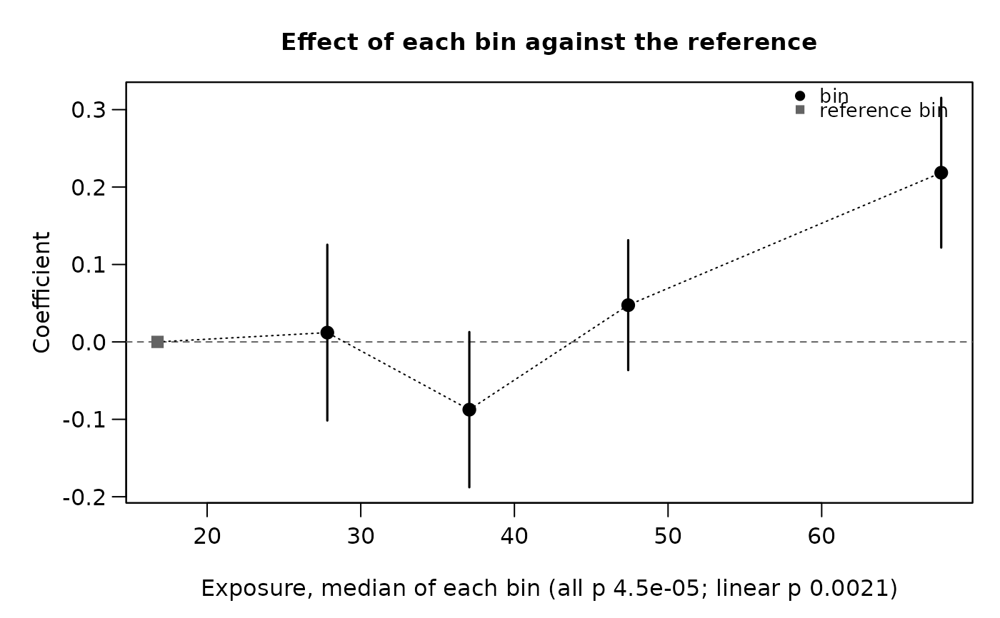

Replaces a continuous exposure by indicators of its bins, the reference bin left out, fits the model, and tests whether the bins matter and whether their effects follow a straight line.
Arguments
- data
A data frame.
- y
The name of the outcome column.
- var
The name of the exposure column.
- nq
The number of quantile bins (when
brkisNULL), at most 67108864 (2^26).- brk
NULLor increasing breaks (right-closed; the lowest included).- ref
The reference bin, counted from 1.
- ctrl
NULLor the names of other regressors.- est
- ...
The other arguments of
est(fe,clus,se, ...). Forplot(), passed to the base-graphics call.- x
An object of class
dosebin.- main
NULL(a default title) or one string.- col
NULL(the palette) or colours.- pal
NULL(the session palette, seeplotopt()) or a palette name forblpal().
Value
A list of class dosebin: tab, one row per bin (bin, mid,
the median exposure, n, est, se, lo, hi, p; the reference
with 0); test, the two Wald tests; fit.
Details
Chin, Lurbe and Shakya (2026, section 5.2, p. 12) replace the log AQI by
indicators of its quintiles, the first left out (nq = 5, the
default), and count the days above public-health thresholds of 100 and
150 (p. 13; give fixed breaks in brk, or aggregate days above a
threshold yourself); their main equation (2) is least squares of the log
count on the log exposure with police-agency-by-month-year effects and
errors clustered by district and season. They report no test of
non-linearity. The tests here: all, the Wald test that every bin's
coefficient is 0; linear, the Wald test that the coefficients are
proportional to the distance of each bin's median exposure from the
reference bin's (a straight line through the reference), on the number
of bins less two degrees of freedom.
plot() draws the effect of each bin with its interval at the
bin's median exposure, the reference bin (0) marked, the p-values of
the two tests in the axis title, and returns the rows drawn.
References
Chin, S., Lurbe, S. and Shakya, P. (2026). Air pollution and crime: heterogeneity by offense types and exposure intensity. SSRN working paper. doi:10.2139/ssrn.6906621
Examples
set.seed(11)
d <- expand.grid(day = 1:100, area = 1:10)
d$aqi <- rgamma(nrow(d), 4, 0.1)
d$crimes <- rpois(nrow(d), exp(1 + 0.3 * (d$aqi > 50)))
b <- dosebin(d, "crimes", "aqi", fe = c("area", "day"))
b
#> dosebin: the effect of each bin against the reference
#> bin mid n est se lo hi p
#> [4.35,22.8] 16.77 200 0.00000 NA NA NA NA
#> (22.8,32.5] 27.82 200 0.01200 0.05795 -0.10159 0.1256 8.360e-01
#> (32.5,42.2] 37.07 200 -0.08752 0.05118 -0.18783 0.0128 8.727e-02
#> (42.2,55.1] 47.41 200 0.04748 0.04284 -0.03649 0.1314 2.678e-01
#> (55.1,138] 67.78 200 0.21854 0.04937 0.12177 0.3153 9.580e-06
#> test stat df p
#> all 25.25 4 0.0000448
#> linear 14.72 3 0.0020678
plot(b)
